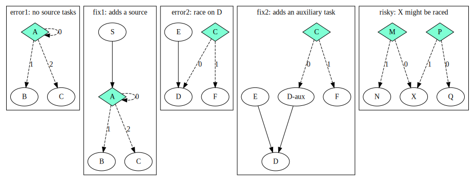

Conditional Tasking
Parallel workloads often require making control-flow decisions across dependent tasks. Taskflow supports an very efficient interface of conditional tasking for users to implement general control flow such as dynamic flows, cycles, and conditionals that are otherwise difficult to do with existing frameworks.
Create a Condition Task
A condition task evalutes a set of instructions and returns an integer index of the next immediate successor to execute. The index is defined with respect to the order of its successor construction.
1: tf::Taskflow taskflow; 2: 3: tf::Task init = taskflow.emplace([](){}).name("init"); 4: tf::Task stop = taskflow.emplace([](){}).name("stop"); 5: 6: // creates a condition task that returns 0 or 1 7: tf::Task cond = taskflow.emplace([](){ 8: std::cout << "flipping a coin\n"; 9: return std::rand() % 2; 10: }).name("cond"); 11: 12: // creates a feedback loop 13: init.precede(cond); 14: cond.precede(cond, stop); // cond--0-->cond, cond--1-->stop 15: 16: executor.run(taskflow).wait();
The example above implements a simple yet commonly used feedback loop through a condition task (line 7-10) that returns a random binary value. If the return value from cond is 0, it loops back to itself, or otherwise to stop. Our conditional tasking interface is very neat and expressive. A complex flow control often just takes a few lines of code to implement. The code below creates another taskflow with three condition tasks.
1: tf::Taskflow taskflow; 2: 3: tf::Task A = taskflow.emplace([](){}).name("A"); 4: tf::Task B = taskflow.emplace([](){}).name("B"); 5: tf::Task C = taskflow.emplace([](){}).name("C"); 6: tf::Task D = taskflow.emplace([](){}).name("D"); 7: tf::Task E = taskflow.emplace([](){}).name("E"); 8: tf::Task F = taskflow.emplace([](){}).name("F"); 9: tf::Task G = taskflow.emplace([](){}).name("G"); 10: tf::Task H = taskflow.emplace([](){}).name("H"); 11: tf::Task I = taskflow.emplace([](){}).name("I"); 12: tf::Task K = taskflow.emplace([](){}).name("K"); 13: tf::Task L = taskflow.emplace([](){}).name("L"); 14: tf::Task M = taskflow.emplace([](){}).name("M"); 15: tf::Task cond_1 = taskflow.emplace([](){ return std::rand()%2; }).name("cond_1"); 16: tf::Task cond_2 = taskflow.emplace([](){ return std::rand()%2; }).name("cond_2"); 17: tf::Task cond_3 = taskflow.emplace([](){ return std::rand()%2; }).name("cond_3"); 18: 19: A.precede(B, F); 20: B.precede(C); 21: C.precede(D); 22: D.precede(cond_1); 23: E.precede(K); 24: F.precede(cond_2); 25: H.precede(I); 26: I.precede(cond_3); 27: L.precede(M); 28: 29: cond_1.precede(B, E); 30: cond_2.precede(G, H); 31: cond_3.precede(cond_3, L); 32: 33: taskflow.dump(std::cout);
Debrief:
- Line 29 creates a condition task that loops back to B on return 0, and proceeds to E on return 1
- Line 30 creates a condition task that goes to G and H on return 0 and 1, respectively
- Line 31 creates a condition task that loops back to itself on return 0, and proceeds to L on return 1
You can use condition tasks to create cycles as long as the graph does not introduce task race during execution. However, cycles are not allowed in non-condition tasks.
Task Scheduling Policy
In order to understand how an executor schedules condition tasks, we define two dependency types, strong dependency and weak dependency. A strong dependency is a preceding link from a non-condition task to another task. A weak dependency is a preceding link from a condition task to another task. The number of dependents of a task is the sum of strong dependency and weak dependency. The table below lists the strong dependency and weak dependency numbers of each task in the previous example.
| task | strong dependency | weak dependency | dependents |
|---|---|---|---|
| A | 0 | 0 | 0 |
| B | 1 | 1 | 2 |
| C | 1 | 0 | 1 |
| D | 1 | 0 | 1 |
| E | 0 | 1 | 1 |
| F | 1 | 0 | 1 |
| G | 0 | 1 | 1 |
| H | 0 | 1 | 1 |
| I | 1 | 0 | 1 |
| K | 1 | 0 | 1 |
| L | 0 | 1 | 1 |
| M | 1 | 0 | 1 |
| cond_1 | 1 | 0 | 1 |
| cond_2 | 1 | 0 | 1 |
| cond_3 | 1 | 1 | 2 |
You can query the number of strong dependents, the number of weak dependents, and the number of dependents of a task.
1: tf::Taskflow taskflow; 2: 3: tf::Task task = taskflow.emplace([](){}); 4: 5: // ... add more tasks and preceding links 6: 7: std::cout << task.num_dependents() << '\n'; 8: std::cout << task.num_strong_dependents() << '\n'; 9: std::cout << task.num_weak_dependents() << '\n';
When you submit a task to an executor, the scheduler starts with tasks of zero dependents (both zero strong and weak dependencies) and continues to execute successive tasks whenever their strong dependencies are met. However, the scheduler skips this rule when executing a condition task and jumps directly to its successors indexed by the return value.

Each task has an atomic join counter to keep track of strong dependents that are met at runtime. When a task completes, the join counter is restored to the task's strong dependency number in the graph, such that the subsequent execution can reuse the counter again.
Common Pitfalls
Condition tasks are handy in creasing dynamic and cyclic control flows, but they are also easy to make mistakes. It is your responsibility to ensure a taskflow is properly conditioned. Top things to avoid include no source tasks to start with and task race. The figure below shows common pitfalls and their remedies.
In the error1 scenario, there is no source task for the scheduler to start with, and the simplest fix is to add a task S that has no dependents. In the error2 scenario, D might be scheduled twice by E through the strong dependency and C through the weak dependency (on return 1). To fix this problem, you can add an auxiliary task D-aux to break the mixed use of strong dependency and weak dependency. In the risky scenario, task X may not be raced if P and M is exclusively branching to X.
A good practice for avoiding mistakes of conditional tasking is to infer the execution flow of your graphs based on our scheduling rules. Make sure there is no task race.